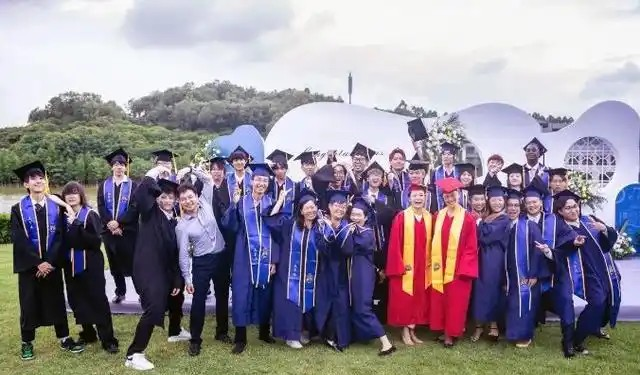

Qingren SJNA Home page About us Academic Admissions
Qingren SJNA is an international and innovative school dedicated to developing self-leaders and lifelong growers in partnership with SJNA (St. John's Northwestern Academy) Schools in the U.S. The 2023 admissions results are remarkable, with 100% admitted to the world's top 100 universities. The school offers personalized academic and college support, four academies and a companion system that focuses on self-reflection and leadership development. Enrollment is open to students in grades 7 through 12, with different categories of enrollment offered.
A school that liberates the life force.
A place where change can be catalyzed to happen.
A group of learners searching for the spark of life.
A group of accepting, student-centered gardeners.
A few growth coaches for companionship and support.
A team that has maintained a 100% acceptance rate to prestigious universities since the founding of the school.
A teaching and research team that cooperates with St. John's School under the guidance of SDSU SDIM College-Qingren Joint Center for Innovative Education and Research.